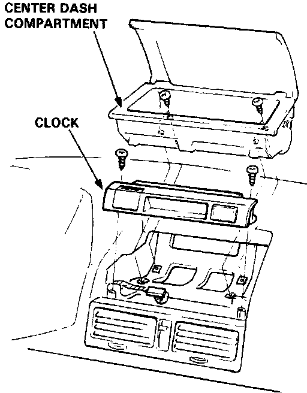

Operation CHARM
: Car repair manuals for everyone.
Home
>>
Acura
>>
1989
>>
Legend Sedan V6-2675cc 2.7L SOHC FI
>>
Repair and Diagnosis
>>
Instrument Panel, Gauges and Warning Indicators
>>
Clock
>>
Service and Repair
Clock: Service and Repair

1.
Remove the 4 screws and the center dash compartment from the dashboard.
2.
Remove the 2 screws from both sides of the clock then disconnect the 6-P connector from the clock.